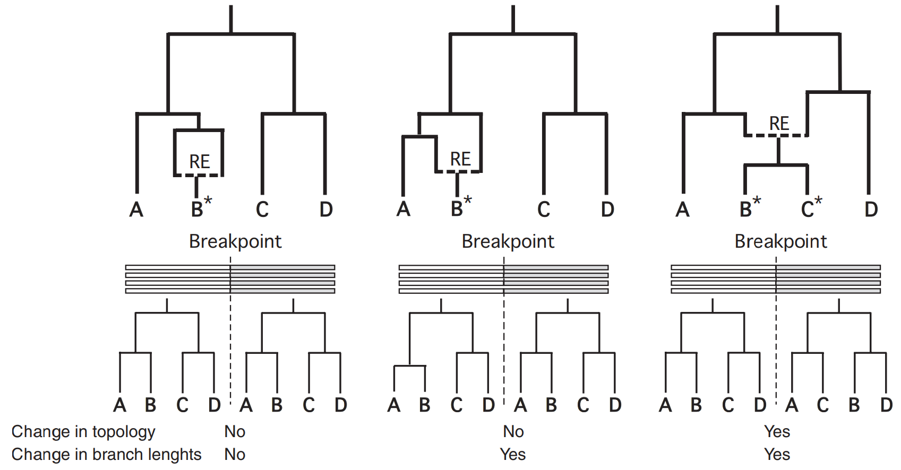
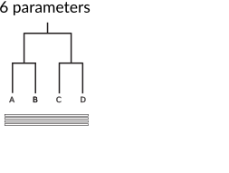
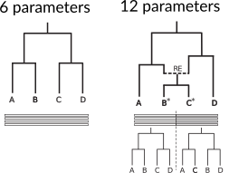

Recombination in trees
Erick Matsen
Recombination in viruses

What is the impact of recombination on phylogenies?
What is the impact of recombination on phylogenies?

Testing for recombination
Tools for recombination detection look for signals of multiple trees.
Recombination detection as model comparison

Recombination detection as model comparison

Recombination detection as model comparison
